Nespresso deține 30% din segmentul premium
Sursa: Statista, Nestlé Annual Report 2023Eric Favre, inginer Nestlé, brevetează ideea capsulei de cafea după ce observă că barista din Roma agită espressorul pentru a crea spumă mai bogată.
Litera „N" în italic — eleganță, mișcare, premium. Recunoaștere instantanee la nivel global.
Negru, auriu, crem și roșu burgundy. Fiecare nuanță comunică rafinament.
What Else?
Fonturi serif elegante, spațiere generoasă, majuscule subțiri — stilul Didot.
“Nespresso nu vinde cafea.
Vinde un ritual.”
Confort, calitate constantă, ritual premium, varietate de origini selecte.
Profesioniști urbani 30–55 ani, stil de viață aspirațional, conștiință eco.
Ritualul de dimineață, întâlniri de afaceri, entertaining acasă, cadouri.
“Nespresso se poziționează nu ca o cafea, ci ca un moment de lux personal.”
Nespresso este deținut de Nestlé S.A., cel mai mare grup alimentar din lume, care operează o strategie de portofoliu pe segmente distincte de preț și stil de viață.
30–45 ani, venit peste medie. Cafeaua este un ritual de status și un moment personal zilnic.
25–35 ani, accesibilitate relativă la lux. Prima achiziție premium — poarta de intrare în universul luxury.
Companii, hoteluri 5 stele, restaurante premium. Cafeaua ca simbol de hospitalitate.
Nespresso nu targetează toți consumatorii de cafea — ci pe cei care vor să fie mai mult decât consumatori.
Țări prezente
Boutique-uri în lume
Vânzări anuale (2023)
De la o idee elvețiană la o prezență pe 5 continente. Nespresso operează prin boutique-uri proprii, e-commerce și o rețea selectă de retail parteneri.
“What Else?”
2006 — George Clooney devine chipul unui brand. Nu un produs. Un lifestyle.
Site cu experiență boutique, aplicație proprie, e-commerce first — fiecare click este o experiență premium.
Programul AAA, Rainforest Alliance, capsule reciclabile — sustenabilitate ca valoare de brand.
Direct-to-consumer, boutique exclusiv, fără supermarket-uri clasice — protejarea percepției premium.
Hoteluri Marriott, companii aeriene premium, restaurante Michelin — asocieri strategice cu luxul.
Doar espresso european clasic — piață limitată geografic
Vertuo pentru America de Nord — cafea lungă, piață nouă
Creștere piață
Lux tradițional — criticat pentru capsule de unică folosință
“Lux responsabil” — reciclare, carbon neutral până în 2022
Aluminiu reciclabil
[NUMELE TĂU]
[FACULTATEA / UNIVERSITATEA]